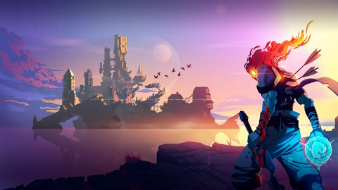
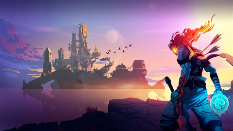

History of
Rogue-like
Roguelike games have their roots in the 1980s with the release of the game "Rogue" in 1980, which was a dungeon-crawling game with randomly generated levels, turn-based combat, and permadeath. Rogue became popular among computer hobbyists and its gameplay mechanics and procedural generation would go on to influence the development of many other games. Throughout the 1980s and 1990s, roguelike games continued to be developed...
Learn More
Binding of Issac: Rebirth
"The Binding of Isaac" is a roguelike video game developed by Edmund McMillen and Florian Himsl. It was first released in 2011 and has since been remade and expanded several times. The game is a top-down dungeon crawler with randomly generated levels, permadeath, and a focus on item-based progression. The story of "The Binding of Isaac" follows a young boy named Isaac...
Learn More
Slay the Spire
"Slay the Spire" is a roguelike deck-building video game developed by MegaCrit. It was first released in 2019 and has since gained a large following for its addictive gameplay and unique combination of genres. The game is set in a fantasy world and follows the player character as they climb the titular Spire, a tower filled with monsters and challenges. Players must navigate through a series of randomly generated floors, each with a unique set of encounters and enemies, in order to reach the top of the Spire. Gameplay in "Slay the Spire" revolves around building and customizing a deck of cards...
Learn More
Dead Cells
"Dead Cells" is a roguelike metroidvania video game developed by Motion Twin. It was first released in 2018 and has since become known for its fast-paced combat, challenging gameplay, and procedurally generated levels. The game is set in a dark and atmospheric world and follows the player character, a sentient mass of cells, as they navigate through a series of interconnected levels filled with deadly enemies and traps. Players must fight their way through each level while collecting new weapons and abilities and upgrading their stats. Gameplay in "Dead Cells" is fast and frenetic...
Learn More